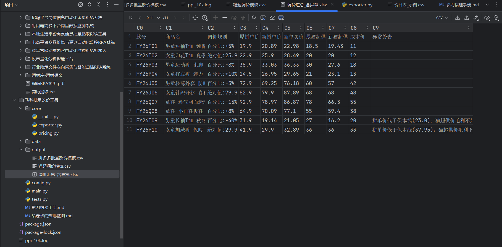

针对童装品牌渠道服务（拼多多 + 天猫超市）的运营高频痛点：运营把「款号 + 调价规则」填进价目表 → 工具秒级按双平台价格口径算价，自动拦截低于成本 / 破历史最低的"亏本改价"→ 输出拼多多 / 猫超导入模板 + 异常标红汇总。安全防线实测拦截负价，代码带 16 个自动化单测。
渠道服务商的运营每天在做上架、主图详情优化、下架、批量改价。改价是其中规则最清晰、重复最高的一条——但它有个隐形风险：几百款手改，容易把价改亏（忘了成本线、忘了历史最低价）。
把"批量改价"拆成两步：算价（规则 + 防亏校验） 交给工具（可追溯、秒级、标红异常），上后台上传确认 交给影刀（配手册，需商家账号）。人工只保留最后的业务确认——人把时间还给"决定"，不还"操作"。
运营不懂正则，所以规则用自然语言格式：绝对值:49.9（直接设价）或 百分比:+5% / -10%。解析兼容半角/全角冒号，非法规则不崩、整行拦截。
def parse_rule(rule: str):
"""'绝对值:49.9' → ('abs', 49.9) '百分比:-5%' → ('pct', -0.05)"""
m = re.match(r'绝对值[:：]\s*([\d.]+)', rule)
if m:
return 'abs', float(m.group(1))
m = re.match(r'百分比[:：]\s*([+-]?[\d.]+)%', rule)
if m:
return 'pct', float(m.group(1)) / 100
return 'none', 0.0 # 非法规则 → none, 由调用方拦截该行拼多多维护「拼单价 + 单买价」，猫超是供应商供价体系——同一"业务调价"要在两套口径下分别落价。算完立刻过安全防线，[逆向要点] 零价/负价（降幅过大）直接整行拦截，绝不进上传模板。
# --- 拼多多 ---
base_g = row['pdd_group'] or row['pdd_single'] or 0
pdd_group = val if kind == 'abs' else base_g * (1 + val)
pdd_group = round(pdd_group, 2)
pdd_single = round(pdd_group * config.PDD_GROUP_SINGLE_RATIO, 2) # 单买=拼单价×系数
# [安全防线] 零价/负价(降幅过大) 或低于最低可售 → 整行拒绝, 不进模板
if pdd_group <= 0 or pdd_group < config.PDD_MIN_PRICE:
return {'error': f"拼单价 {pdd_group} 低于最低可售({config.PDD_MIN_PRICE}元)..."}
# --- 猫超(供价体系) ---
if kind == 'abs': # 绝对值视为目标零售价; 无原供价按 零售×0.9 估供价
tms_supply = row['tms_supply'] or round(val * 0.9, 2)
else:
tms_supply = round((row['tms_supply'] or row['cost'] * 2 or base_g) * (1 + val), 2)floor = round(cost * (1 + config.MIN_MARGIN), 2) # 保本线 = 成本×1.15
if pdd_group < floor: notes.append(f"拼单价低于保本线({floor})")
if pdd_single < pdd_group: notes.append("单买价低于拼单价(倒挂)")
if HISTORY_LOW.get(sku) and pdd_group < HISTORY_LOW[sku]:
notes.append("低于历史最低价") # 活动价保护
if tms_supply < cost * (1 + TMS_MIN_MARGIN):
notes.append("猫超供价毛利不足") # 供价不亏
# 任一命中 → 汇总行整行标红(FFC7CE), 运营必须人工确认后才能上传面试讲"我代码带单测"= 工程习惯。覆盖：规则解析（含全角冒号/非法/空）→ 双平台算价（±%）→ 安全防线（负价/低于最低可售拦截）→ 异常保护（低于成本标红）→ 模板错误行跳过。
10 款童装示例跑一遍：秒级算价 → 两平台模板 + 异常标红汇总。下方红色两行就是被安全防线拦下的"会改亏"的款。

体会：真正的"用 AI 提效"是——AI 帮我拆业务 + review 代码抓漏洞，我负责确认规则对业务成立。负价那个 bug 就是 review 出来的：表面"能跑"，实际上传模板会出大事。所以工具一定带安全防线 + 单测，演示才敢给人点。
① 运营只填一张表，不碰代码；② 双平台口径自动分价；③ 防亏标红兜底；④ 模板列名配置化，接平台新版只改 config；⑤ 配影刀手册 + 落地蓝图，能一路串到"上架/下架/素材优化/系统化"。
真实后台上传需商家账号实测；模板字段按平台现行版本对齐；拼单价/供价系数需运营确认真实口径（当前为合理估算 + 配置可调）。